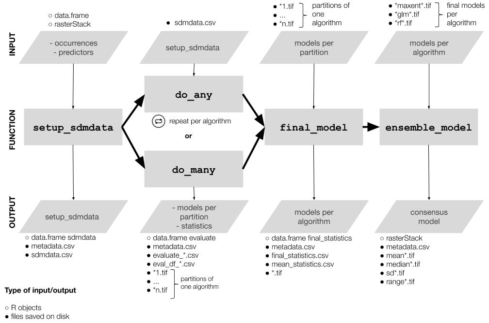
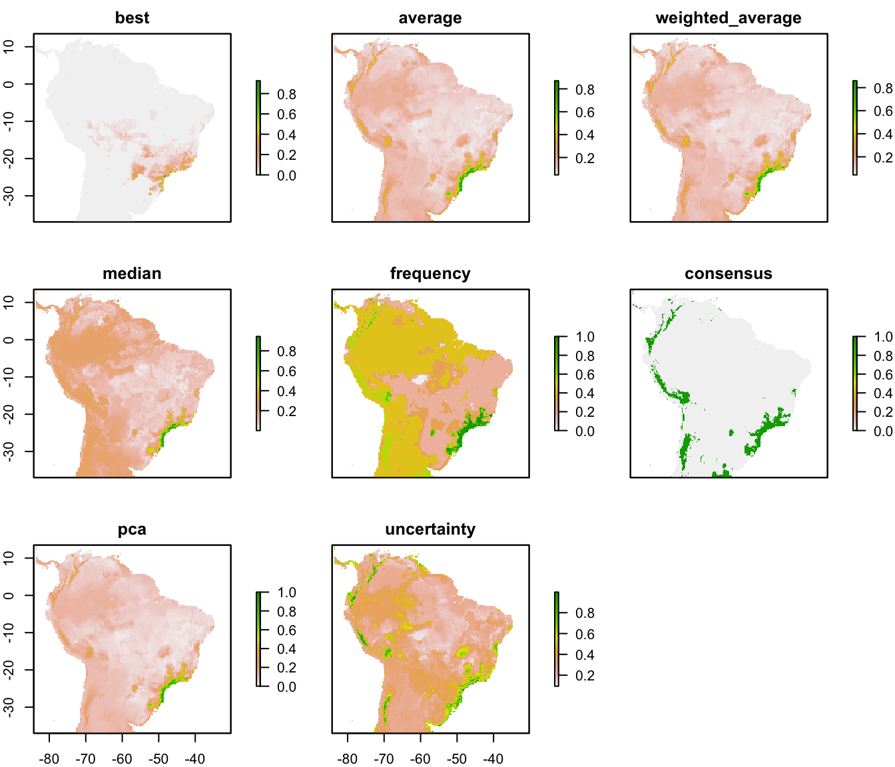

modleR: a workflow for ecological niche models
Andrea Sánchez-Tapia, Sara Mortara & Diogo S. B. Rocha
2022-05-10
Source:vignettes/modleR.Rmd
modleR.Rmd
modleR is a workflow based on package dismo (Hijmans et al. 2017), designed to automatize some of the common steps when performing ecological niche models. Given the occurrence records and a set of environmental predictors, it prepares the data by cleaning for duplicates, removing occurrences with no environmental information and applying some geographic and environmental filters. It executes crossvalidation or bootstrap procedures, then it performs ecological niche models using several algorithms, some of which are already implemented in the dismo package, and others come from other packages in the R environment, such as glm, Support Vector Machines and Random Forests.
Installing
Currently modleR can be installed from GitHub:
# Without vignette
remotes::install_github("Model-R/modleR", build = TRUE)
# With vignette
remotes::install_github("Model-R/modleR",
build = TRUE,
dependencies = TRUE,
build_opts = c("--no-resave-data", "--no-manual"),
build_vignettes = TRUE)Note regarding vignette building: the default parameters in build_opts include --no-build-vignettes. In theory, removing this will include the vignette on the installation but we have found that build_vignettes = TRUE is also necessary. During installation, R may ask to install or update some packages. If any of these return an error you can install them apart by running install.packages() and retry. When building the vignette, package rJava and a JDK will be needed. Also, make sure that the maxent.jar file is available and in the java folder of package dismo. Please download it here. Vignette building may take a while during installation.
Shiny app
A shiny application currently available at: https://github.com/Model-R/modleR_shiny_app uses a previous version of this workflow and is currently being updated to this newest version.
The workflow
The workflow consists of mainly four functions that should be used sequentially.

- Setup:
setup_sdmdata()prepares and cleans the data, samples the pseudoabsences, and organizes the experimental design (bootstrap, crossvalidation or repeated crossvalidation). It creates a metadata file with details for the current round and a sdmdata file with the data used for modeling - Model fitting and projecting:
do_any()makes the ENM for one algorithm and partition; optionally,do_many()callsdo_any()to fit multiple algorithms - Partition joining:
final_model()joins the partition models into a model per species per algorithm - Ensemble:
ensemble_model()joins the different models per algorithm into an ensemble model (algorithmic consensus) using several methods.
Folder structure created by this package
modleR writes the outputs in the hard disk, according to the following folder structure:
models_dir
├── projection1
│ ├── data_setup
│ ├── partitions
│ ├── final_models
│ └── ensemble_models
└── projection2
├── data_setup
├── partitions
├── final_models
└── ensemble_modelsWe define a partition as the individual modeling round (one training and test data set and one algorithm)
We define the final models as joining together the partitions and obtaining one model per species per algorithm
Ensemble models join together the results obtained by different algorithms (Araújo and New 2007)
When projecting models into the present, the projection folder is called
present, other projections will be named after their environmental variablesYou can set
models_dirwherever you want in the hard disk, but if you do not modify the default value, it will create the output under the working directory (its default value is./models, where the period points to the working directory)The names of the
finalandensemblefolders can be modified, but the nested subfolder structure will remain the same. If you changefinal_modelsdefault value ("final_model") you will need to include the new value when callingensemble_model()(final_dir = "[new name]"), to indicate the function where to look for models. This partial flexibility allows for experimenting with final model and ensemble construction (by runnning final or ensemble twice in different output folders, for example).
The example dataset
modleR comes with example data, a list called example_occs with occurrence data for four species, and predictor variables called example_vars.
str(example_occs)
#> List of 4
#> $ Abarema_langsdorffii:'data.frame': 104 obs. of 3 variables:
#> ..$ sp : chr [1:104] "Abarema_langsdorffii" "Abarema_langsdorffii" "Abarema_langsdorffii" "Abarema_langsdorffii" ...
#> ..$ lon: num [1:104] -40.6 -40.7 -41.2 -41.7 -42.5 ...
#> ..$ lat: num [1:104] -19.9 -20 -20.3 -20.5 -20.7 ...
#> $ Eugenia_florida :'data.frame': 341 obs. of 3 variables:
#> ..$ sp : chr [1:341] "Eugenia_florida" "Eugenia_florida" "Eugenia_florida" "Eugenia_florida" ...
#> ..$ lon: num [1:341] -35 -34.9 -34.9 -36.4 -42.1 ...
#> ..$ lat: num [1:341] -6.38 -7.78 -8.1 -10.42 -2.72 ...
#> $ Leandra_carassana :'data.frame': 82 obs. of 3 variables:
#> ..$ sp : chr [1:82] "Leandra_carassana" "Leandra_carassana" "Leandra_carassana" "Leandra_carassana" ...
#> ..$ lon: num [1:82] -39.3 -39.6 -40.7 -41.2 -41.5 ...
#> ..$ lat: num [1:82] -15.2 -15.4 -20 -20.3 -20.4 ...
#> $ Ouratea_semiserrata :'data.frame': 90 obs. of 3 variables:
#> ..$ sp : chr [1:90] "Ouratea_semiserrata" "Ouratea_semiserrata" "Ouratea_semiserrata" "Ouratea_semiserrata" ...
#> ..$ lon: num [1:90] -40 -42.5 -42.4 -42.9 -42.6 ...
#> ..$ lat: num [1:90] -16.4 -20.7 -19.5 -19.6 -19.7 ...
species <- names(example_occs)
species
#> [1] "Abarema_langsdorffii" "Eugenia_florida" "Leandra_carassana"
#> [4] "Ouratea_semiserrata"
library(sp)
par(mfrow = c(2, 2), mar = c(2, 2, 3, 1))
for (i in 1:length(example_occs)) {
plot(!is.na(example_vars[[1]]),
legend = FALSE,
main = species[i],
col = c("white", "#00A08A"))
points(lat ~ lon, data = example_occs[[i]], pch = 19)
}
par(mfrow = c(1, 1))
Figure 1. The example dataset: predictor variables and occurrence for four species.
We will filter the example_occs file to select only the data for the first species:
occs <- example_occs[[1]]
Cleaning and setting up the data: setup_sdmdata()
The first step of the workflow is to setup the data, that is, to partition it according to each project needs, to sample background pseudoabsences and to apply some data cleaning procedures, as well as some filters. This is done by function setup_sdmdata()
setup_sdmdata() has a large number of parameters:
args(setup_sdmdata)
#> function (species_name, occurrences, predictors, lon = "lon",
#> lat = "lat", models_dir = "./models", real_absences = NULL,
#> buffer_type = NULL, dist_buf = NULL, env_filter = FALSE,
#> env_distance = "centroid", buffer_shape = NULL, min_env_dist = NULL,
#> min_geog_dist = NULL, write_buffer = FALSE, seed = NULL,
#> clean_dupl = FALSE, clean_nas = FALSE, clean_uni = FALSE,
#> geo_filt = FALSE, geo_filt_dist = NULL, select_variables = FALSE,
#> cutoff = 0.8, sample_proportion = 0.8, png_sdmdata = TRUE,
#> n_back = 1000, partition_type = c("bootstrap"), boot_n = 1,
#> boot_proportion = 0.7, cv_n = NULL, cv_partitions = NULL)
#> NULL-
species_nameis the name of the species to model -
occurrencesis the data frame with occurrences, lat and lon are the names of the columns for latitude and longitude, respectively. If they are already namedlatandlonthey need not be specified. -
predictors: is the rasterStack of the environmental variables
There are a couple options for data cleaning:
-
clean_duplwill delete exact duplicates in the occurrence data -
clean_naswill delete any occurrence with no environmental data in the predictor set -
clean_uniwill leave only one occurrence per pixel
The function also sets up different experimental designs:
-
partition_typecan be either bootstrap or k-fold crossvalidation -
boot_nandcv_nperform repeated bootstraps and repeated k-fold crossvalidation, respectively -
boot_proportionsets the proportion of data to be sampled as training set (defaults to 0.8) -
cv_partitionssets the number of partitions in the k-fold crossvalidations (defaults to 3) but overwrites part when n < 10, setting part to the number of occurrence records (a jacknife partition).
Pseudoabsence sampling is performed by function has also some options:
-
real_absencescan be used to specify a set of user-defined absences, with species name, lat and lon columns -
geo_filtwill eliminate records that are at less thangeo_filt_distbetween them, in order to control for spatial autocorrelation -
buffer_type: can build a distance buffer around the occurrence points, by taking either the maximal, median or mean distance between points. It can also take a user-defined shapefile as the area for pseudoabsence sampling -
env_filtercalculates the euclidean distance and removes the closest areas in the environmental space from the sampling of pseudoabsences
Pseudoabsence points will be sampled (using dismo::randomPoints()) within the buffer and outside the environmental filter, in order to control for the area accessible to the species (M in the BAM diagram).
-
seed: for reproducibility purposes
test_folder <- "~/modleR_test"
sdmdata_1sp <- setup_sdmdata(species_name = species[1],
occurrences = occs,
predictors = example_vars,
models_dir = test_folder,
partition_type = "crossvalidation",
cv_partitions = 5,
cv_n = 1,
seed = 512,
buffer_type = "mean",
png_sdmdata = TRUE,
n_back = 500,
clean_dupl = TRUE,
clean_uni = TRUE,
clean_nas = TRUE,
geo_filt = FALSE,
geo_filt_dist = 10,
select_variables = TRUE,
sample_proportion = 0.5,
cutoff = 0.7)
#> metadata file found, checking metadata
#> running data setup
#> cleaning data
#> cleaning duplicates
#> cleaning occurrences with no environmental data
#> cleaning occurrences within the same pixel
#> 5 points removed
#> 99 clean points
#> creating buffer
#> Applying buffer
#> Warning in RGEOSDistanceFunc(spgeom1, spgeom2, byid, "rgeos_distance"): Spatial
#> object 1 is not projected; GEOS expects planar coordinates
#> Warning in rgeos::gBuffer(spgeom = occurrences, byid = FALSE, width = dist.buf):
#> Spatial object is not projected; GEOS expects planar coordinates
#> sampling pseudoabsence points with mean buffer
#> selecting variables...
#> No variables were excluded with cutoff = 0.7
#> saving metadata
#> extracting environmental data
#> extracting background data
#> performing data partition
#> saving sdmdata
#> Plotting the dataset...
#> DONE!- The function will return a
sdmdatadata frame, with the groups for training and test in bootstrap or crossvalidation, apavector that marks presences and absences, and the environmental dataset. This same data frame will be written in the hard disk, assdmdata.txt - It will also write a
metadata.txtwith the parameters of the latest modeling round. If there has been a cleaning step, it will show different values in the “original.n” and “final.n” columns. -
NOTE:
setup_sdmdatawill check if there’s a prior folder structure andsdmdata.txtandmetadata.txtfiles, in order to avoid repeating the data partitioning.- If a call to the function encounters previously written metadata, it will check if the current round has the same parameters and skip the data partitioning. A message will be displayed:
#> metadata file found, checking metadata#> same metadata, no need to run data partition - If a previous metadata file is found but it has different metadata (i.e. there is an inconsistency between the existing metadata and the current parameters), it will run the function with the current parameters.
- If a call to the function encounters previously written metadata, it will check if the current round has the same parameters and skip the data partitioning. A message will be displayed:
Fitting a model per partition: do_any() and do_many()
Functions do_any() and do_many() create a model per partition, per algorithm. The difference between these functions that do_any() performs modeling for one individual algorithm at a time, that can be chosen by using parameter algorithm, while do_many() can select multiple algorithms, with TRUE or FALSE statements (just as BIOMOD2 functions do).
The available algorithms are:
-
"bioclim","maxent","mahal","domain", as implemented in dismo package (Hijmans et al. 2017), - Support Vector Machines (SVM), as implemented by packages kernlab (
svmkKaratzoglou et al. 2004) and e1071 (svmeMeyer et al. 2017), - GLM from base R, here implemented with a stepwise selection approach
- Random Forests (from package randomForest Liaw and Wiener 2002)
- Boosted regression trees (BRT) as implemented by
gbm.step()function in dismo package (Hastie, Tibshirani, and Friedman 2001; Elith, Leathwick, and Hastie 2009).
Details for the implementation of each model can be accessed in the documentation of the function.
Here you can see the differences between the parameters of both functions. do_many() calls several instances of do_any() Sometimes you may only want to call do_many() but for better control and parallelization by algorithm it may be better to call do_any() individually.
args(do_any)
#> function (species_name, predictors, models_dir = "./models",
#> algorithm = c("bioclim"), project_model = FALSE, proj_data_folder = "./data/proj",
#> mask = NULL, write_rda = FALSE, png_partitions = FALSE, write_bin_cut = FALSE,
#> dismo_threshold = "spec_sens", equalize = TRUE, sensitivity = 0.9,
#> proc_threshold = 0.5, ...)
#> NULL
args(do_many)
#> function (species_name, bioclim = FALSE, domain = FALSE, glm = FALSE,
#> mahal = FALSE, maxent = FALSE, maxnet = FALSE, rf = FALSE,
#> svmk = FALSE, svme = FALSE, brt = FALSE, ...)
#> NULLCalling do_many() and setting bioclim = TRUE is therefore equivalent to call do_any() and set algorithm = "bioclim".
sp_maxnet <- do_any(species_name = species[1],
algorithm = "maxnet",
predictors = example_vars,
models_dir = test_folder,
png_partitions = TRUE,
write_bin_cut = FALSE,
equalize = TRUE,
write_rda = TRUE)The resulting object is a table with the performance metrics, but the actual output is written on disk
sp_maxnet
#> kappa spec_sens no_omission prevalence equal_sens_spec
#> thresholds 0.5497432 0.2246503 0.06975926 0.1639895 0.2433702
#> sensitivity species_name algorithm run partition presencenb
#> thresholds 0.2433702 Abarema_langsdorffii maxnet 1 1 20
#> absencenb correlation pvaluecor AUC AUC_pval AUCratio pROC
#> thresholds 100 0.7844173 3.088941e-26 0.965 NA 1.93 1.837488
#> pROC_pval TSSmax KAPPAmax dismo_threshold prevalence.value
#> thresholds 0 0.85 0.7765957 spec_sens 0.1666667
#> PPP NPP TPR TNR FPR FNR CCR Kappa F_score
#> thresholds 0.6551724 0.989011 0.95 0.9 0.1 0.05 0.9083333 0.720339 0.7755102
#> Jaccard
#> thresholds 0.6333333The following lines call for bioclim, GLM, random forests, BRT, svme (from package e1071), and smvk (from package kernlab)
many <- do_many(species_name = species[1],
predictors = example_vars,
models_dir = test_folder,
png_partitions = TRUE,
write_bin_cut = FALSE,
write_rda = TRUE,
bioclim = TRUE,
domain = FALSE,
glm = TRUE,
svmk = TRUE,
svme = TRUE,
maxent = FALSE,
maxnet = TRUE,
rf = TRUE,
mahal = FALSE,
brt = TRUE,
equalize = TRUE)In addition:
-
mask: will crop and mask the partition models into a ShapeFile -
png_partitionswill create a png file of the output
At the end of a modeling round, the partition folder containts:
- A
.tiffile for each partition, continuous, binary and cut by the threshold that maximizes its TSS (TSSmax). Its name will indicate the algorithm, the type of model (cont, bin or cut), the name of the species, the run and partition. - Figures in
.pngto explore the results readily, without reloading them into R or opening them in a SIG program. The creation of these figures can be controlled with thepng_partitionsparameter. - A
.txttable with the evaluation data for each partition:evaluate_[Species name ]_[partition number]_[algorithm].txt. These files will be read by thefinal_model()function, to generate the final model per species. - A file called
sdmdata.txtwith the data used for each partition - A file called
metadata.txtwith the metadata of the current modeling round. - An optional
.pngimage of the data (controlled by parameterpng_sdmdata = TRUE)
Joining partitions: final_model()
There are many ways to create a final model per algorithm per species. final_model() follows the following logic:

- The partitions that will be joined can be the raw, uncut models, or the binary models from the previous step, they form a
raster::rasterStack()object. - The means for the raw models can be calculated (
raw_mean) - From
raw_mean, a binary model can be obtained by cutting it by the mean threshold that maximizes the selected performance metric for each partition (bin_th_par), this israw_mean_th. From this, values above the threshold can be revovered (raw_mean_cut). - In the case of binary models, since they have already been transformed into binary, a mean can be calculated (
bin_mean). Thisbin_meanreflects the consensus between partitions, and its scale is categorical. - From
bin_mean, a specific consensus level can be chosen (i.e. how many of the models predict an area,consensus_level) and the resulting binary model can be built (bin_consensus). The parameterconsensus_levelallows to set this level of consensus (defaults to 0.5: majority consensus approach). - NOTE: The final models can be done using a subset of the algorithms avaliable on the hard disk, using the parameter
algorithms. If left unspecified, all algorithms listed in theevaluatefiles will be used.
args(final_model)
#> function (species_name, algorithms = NULL, scale_models = TRUE,
#> consensus_level = 0.5, models_dir = "./models", final_dir = "final_models",
#> proj_dir = "present", which_models = c("raw_mean"), mean_th_par = c("spec_sens"),
#> uncertainty = FALSE, png_final = TRUE, sensitivity = 0.9,
#> ...)
#> NULL
final_model(species_name = species[1],
algorithms = NULL, #if null it will take all the algorithms in disk
models_dir = test_folder,
which_models = c("raw_mean",
"bin_mean",
"bin_consensus"),
consensus_level = 0.5,
uncertainty = TRUE,
overwrite = TRUE)final_model() creates a .tif file for each final.model (one per algorithm) under the specified folder (default: final_models)
The raw_mean final models for each algorithm are these:

Algorithmic consensus with ensemble_model()
The fourth step of the workflow is joining the models for each algorithm into a final ensemble model. ensemble_model() calculates the mean, standard deviation, minimum and maximum values of the final models and saves them under the folder specified by ensemble_dir. It can also create these models by a consensus rule (what proportion of final models predict a presence in each pixel, 0.5 is a majority rule, 0.3 would be 30% of the models).
ensemble_model() uses a which_final parameter -analog to which_model in final_model() to specify which final model(s) (Figure 2) should be assembled together (the default is a mean of the raw continuous models: which_final = c("raw_mean")).
args(ensemble_model)
#> function (species_name, occurrences, lon = "lon", lat = "lat",
#> models_dir = "./models", final_dir = "final_models", ensemble_dir = "ensemble",
#> proj_dir = "present", algorithms = NULL, which_ensemble = c("average"),
#> which_final = c("raw_mean"), performance_metric = "TSSmax",
#> dismo_threshold = "spec_sens", consensus_level = 0.5, png_ensemble = TRUE,
#> write_occs = FALSE, write_map = FALSE, scale_models = TRUE,
#> uncertainty = TRUE, ...)
#> NULL
ens <- ensemble_model(species_name = species[1],
occurrences = occs,
performance_metric = "pROC",
which_ensemble = c("average",
"best",
"frequency",
"weighted_average",
"median",
"pca",
"consensus"),
consensus_level = 0.5,
which_final = "raw_mean",
models_dir = test_folder,
overwrite = TRUE) #argument from writeRaster
#> [1] "Tue May 10 13:53:13 2022"
#> [1] "DONE!"
#> [1] "Tue May 10 13:54:18 2022"
plot(ens)
Workflows with multiple species
Our example_occs dataset has data for four species. An option to do the several models is to use a for loop
args(do_many)
args(setup_sdmdata)
for (i in 1:length(example_occs)) {
sp <- species[i]
occs <- example_occs[[i]]
setup_sdmdata(species_name = sp,
models_dir = "~/modleR_test/forlooptest",
occurrences = occs,
predictors = example_vars,
buffer_type = "distance",
dist_buf = 4,
write_buffer = TRUE,
clean_dupl = TRUE,
clean_nas = TRUE,
clean_uni = TRUE,
png_sdmdata = TRUE,
n_back = 1000,
partition_type = "bootstrap",
boot_n = 5,
boot_proportion = 0.7
)
}
for (i in 1:length(example_occs)) {
sp <- species[i]
do_many(species_name = sp,
predictors = example_vars,
models_dir = "~/modleR_test/forlooptest",
png_partitions = TRUE,
bioclim = TRUE,
maxnet = TRUE,
rf = TRUE,
svmk = TRUE,
svme = TRUE,
brt = TRUE,
glm = TRUE,
domain = FALSE,
mahal = FALSE,
equalize = TRUE,
write_bin_cut = TRUE)
}
for (i in 1:length(example_occs)) {
sp <- species[i]
final_model(species_name = sp,
consensus_level = 0.5,
models_dir = "~/modleR_test/forlooptest",
which_models = c("raw_mean",
"bin_mean",
"bin_consensus"),
uncertainty = TRUE,
overwrite = TRUE)
}
for (i in 1:length(example_occs)) {
sp <- species[i]
occs <- example_occs[[i]]
ensemble_model(species_name = sp,
occurrences = occs,
which_final = "bin_consensus",
png_ensemble = TRUE,
models_dir = "~/modleR_test/forlooptest")
}Another option is to use the purrr package (Henry and Wickham 2017).
library(purrr)
example_occs %>% purrr::map2(.x = .,
.y = as.list(names(.)),
~ setup_sdmdata(species_name = .y,
occurrences = .x,
partition_type = "bootstrap",
boot_n = 5,
boot_proportion = 0.7,
clean_nas = TRUE,
clean_dupl = TRUE,
clean_uni = TRUE,
buffer_type = "distance",
dist_buf = 4,
predictors = example_vars,
models_dir = "~/modleR_test/temp_purrr",
n_back = 1000))
species %>%
as.list(.) %>%
purrr::map(~ do_many(species_name = .,
predictors = example_vars,
models_dir = "~/modleR_test/temp_purrr",
bioclim = TRUE,
maxnet = FALSE,
rf = TRUE,
svme = TRUE,
svmk = TRUE,
domain = FALSE,
glm = TRUE,
mahal = FALSE,
brt = TRUE,
equalize = TRUE))
species %>%
as.list(.) %>%
purrr::map(~ final_model(species_name = .,
consensus_level = 0.5,
models_dir = "~/modleR_test/temp_purrr",
which_models = c("raw_mean",
"bin_mean",
"bin_consensus"),
overwrite = TRUE))
example_occs %>% purrr::map2(.x = .,
.y = as.list(names(.)),
~ ensemble_model(species_name = .y,
occurrences = .x,
which_final = "raw_mean",
png_ensemble = TRUE,
models_dir = "~/modleR_test/temp_purrr",
overwrite = TRUE))These workflows can also be paralellized by species or species algorithms